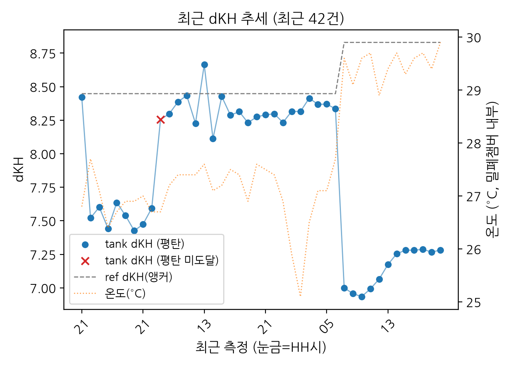

AquaWiz
산호 수조 dKH 자동 측정 대시보드
수조 dKH
–
기준(ref)
–
온도
–
최신값 불러오는 중…
그래프를 눌러보거나 손가락으로 짚으면 각 지점의 값이 보입니다

🔬 최근 측정 과정 (평탄 추종)
불러오는 중…
📒 측정 대장
📘 사용 설명서
🛠️ 자동화 구성
🧰 준비물 목록
🔗 reefCore 연동
📶 블루투스 재연결
🧪 연구 노트
💻 GitHub 저장소